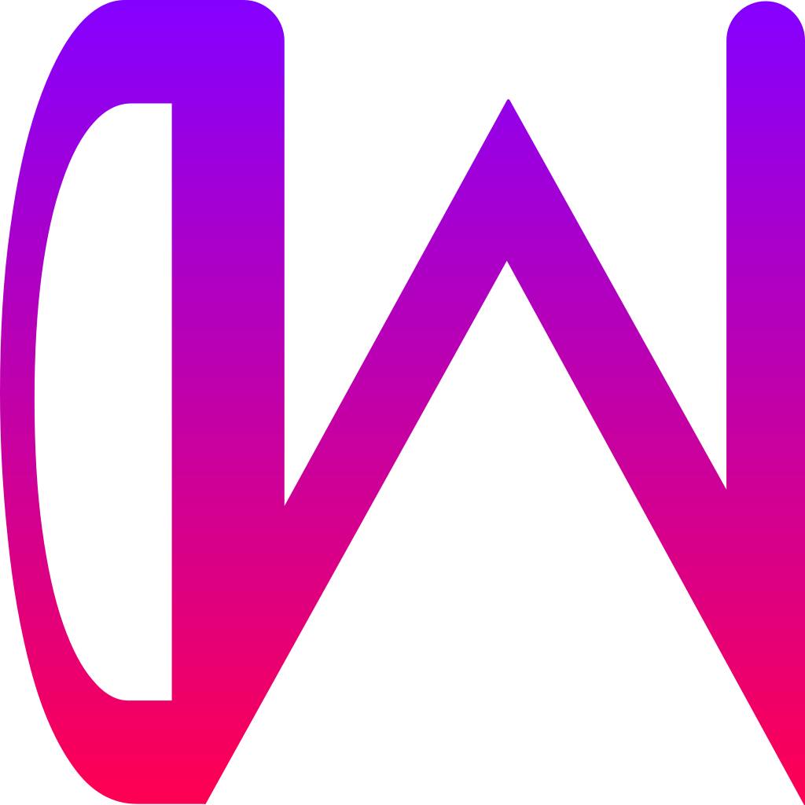

MIDIDAWAn ultra-responsive mobile touch surface featuring scale-quantized piano keys, MPC velocity drum pads, microtonal ribbon slide rolls, and zero-configuration USB and Wi-Fi PC bridges.
Engineered for extreme performance, low latency, and maximum musical expression.
Lock your keyboard to 16+ musical scales including Pentatonic, Blues, Dorian, and Harmonic Minor. Never play out of key again.
Responsive multi-touch finger drumming with customizable MIDI note assignments, channels (1–16), and haptic trigger feedback.
Continuous capacitive ribbon controller for smooth pitch glissando, fretless synth leads, and live filter modulation.
Transforms your Android device into a class-compliant USB MIDI hardware gadget. No PC driver or background app required.
Dedicated Windows companion application with automatic ADB port forwarding and high-speed binary WebSocket streaming.
Jam untethered anywhere in your home studio with ultra-low latency WebSocket streaming over your local Wi-Fi router.
Fully compatible with all digital audio workstations that accept MIDI input.
Choose between plug-and-play USB hardware mode or the desktop bridge application.
127.0.0.1:8080) and displays your local Wi-Fi IP address.